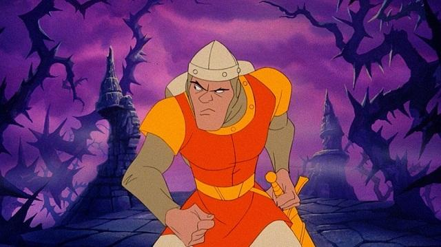
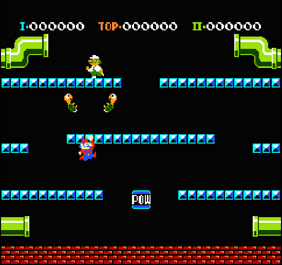
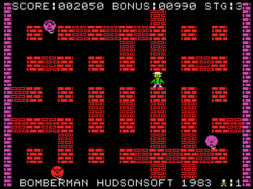
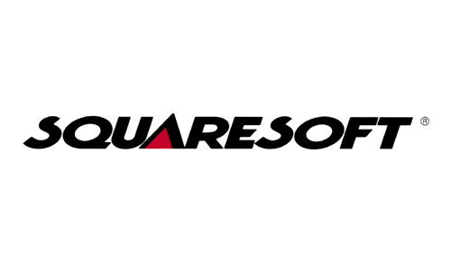

>
Otro juego conocido que aparece este año es el Dragon's Lair, clásico exponente
de caballero que rescata a la princesa de un dragón, con toques de humor y
que utilizaba por primera vez la tecnología Laser Disc.
<

>
También nace Mario Bros. Este personaje ya lo habíamos visto en el Donkey Kong, pero ahora
tenía su juego propio para recreativas. Se dice que le llamaron así por el gran
parecido con el casero de Miyamoto en el edificio donde se hospedaba en Nueva York
cuando tenía que ir allí. También aparece por primera vez su hermano Luigi.
El objetivo del juego era limpiar las tuberías de diferentes plagas.
<

>
Otro mítico juego que surge en este año fue el Bomberman, que consistía en ir
colocando estratégicamente bombas en cada nivel con el objetivo de quitar
obstáculos o eliminar enemigos. Estas bombas tardaban un tiempo en explotar y tenían
un cierto alcance, por lo tanto había que vigilar para no ser alcanzado por ellas.
<

>
Durante este año se funda la que sería una de las compañías más importantes en la historia de los videojuegos: Squaresoft.
La compañía entró en una situación de bancarrota al cabo de 4 años y estuvo a punto de desaparecer si no fuera porque Hironobu Sakaguchi creó el primer Final Fantasy, con un gran éxito, relanzando a la empresa a lo más alto.
<